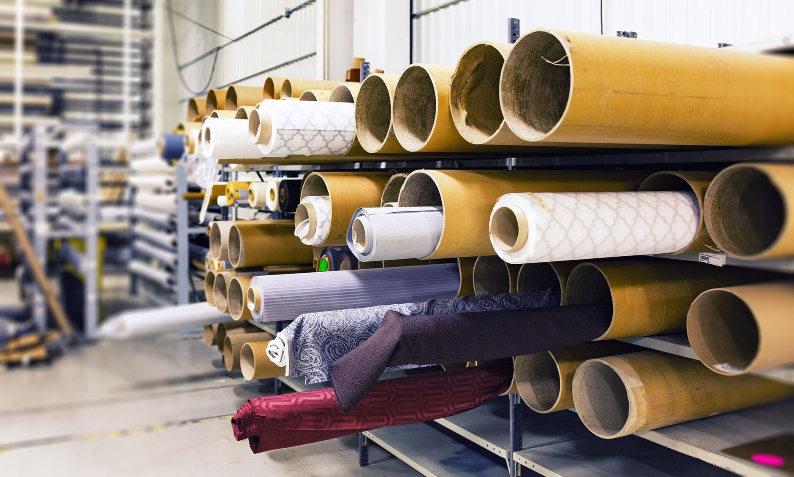

한울소재과학, 반도체 소재 양산 체제 본격 가동…주가 18% 급등

반도체 소재 전문기업 한울소재과학이 자회사 PSM(Process & Semiconductor Materials)의 핵심 공정 인증을 최종 통과하며 반도체 소재 생산기지 구축을 완료했다고 14일 밝혔다. 이번 인증 통과는 단순한 설비 완공을 넘어 실제 양산 가능 여부를 검증받는 단계로, 업계에서는 사실상의 상업 생산 개시 신호탄으로 평가한다.
이 소식이 전해지자 한울소재과학 주가는 장중 한때 18% 이상 급등하며 52주 신고가에 근접했다. 거래량도 전일 대비 10배 이상 폭증해 개인 투자자들의 매수세가 집중됐다. 시가총액은 하루 만에 수백억 원이 불어났으며, 코스닥 소재 섹터 내 상위 수익률 종목으로 이름을 올렸다.
PSM은 한울소재과학이 반도체 소재 사업 강화를 위해 설립한 자회사로, 반도체 제조 공정에 사용되는 고순도 화학 소재 및 세정제 계열 제품 생산에 특화돼 있다. 이번에 인증을 받은 생산라인은 연간 수백 톤 규모의 처리 용량을 갖추고 있으며, 초기 가동률은 약 60% 수준에서 시작해 하반기 내 100% 풀 가동을 목표로 한다.
회사 측은 이번 양산 체제 전환이 단순히 생산 능력 확대에 그치지 않는다고 강조한다. 한울소재과학 관계자는 '기존에는 연구개발 단계의 소량 생산에 머물렀지만, 이번 양산 라인 가동을 통해 주요 반도체 제조사들과의 공급 계약 협상에서 가격 경쟁력과 납기 안정성을 동시에 제시할 수 있게 됐다'고 말했다.
국내 반도체 소재 업계는 일본산 대체 소재 개발과 국산화 흐름 속에서 중소·중견 소재기업들의 역할이 커지는 추세다. 특히 2019년 일본 수출 규제 이후 가속화된 소재 국산화 정책의 수혜를 받아 관련 기업들의 기술 개발 투자가 꾸준히 이어지고 있으며, 한울소재과학 역시 이 흐름에서 수혜를 받는 기업 중 하나로 꼽힌다.
시장조사기관에 따르면 국내 반도체용 특수 화학 소재 시장은 2026년 기준 약 4조 5천억 원 규모로 추산되며, 연평균 8~10% 성장세를 유지하고 있다. 특히 AI 반도체 수요 급증으로 첨단 공정용 고순도 소재 수요가 빠르게 늘어나면서, 양산 능력을 갖춘 국내 소재사에 대한 수요처의 관심이 높아지는 상황이다.
증권업계는 한울소재과학의 실적 개선 가능성에 긍정적인 시각을 보내고 있다. 한 증권사 애널리스트는 '양산 개시는 매출 가시성이 확보된다는 점에서 밸류에이션 재평가의 트리거가 될 수 있다'며 '하반기 고객사 인증 확보 여부가 주가 추가 상승을 결정짓는 핵심 변수'라고 분석했다.
경쟁사들의 동향도 주목된다. 동진쎄미켐, 솔브레인 등 기존 반도체 소재 강자들이 시장 점유율을 높이는 가운데, 한울소재과학은 틈새 품목에 집중하는 전략으로 차별화를 꾀하고 있다. 특히 특정 세정 공정에 사용되는 고기능성 소재 분야에서 특허를 다수 보유한 점이 경쟁 우위로 작용할 전망이다.
공급망 측면에서도 긍정적인 환경이 조성되고 있다. 삼성전자, SK하이닉스 등 주요 반도체 제조사들이 소재 공급망 다변화를 추진하면서 검증된 국내 중소·중견 소재사와의 협력을 강화하는 방향으로 정책을 전환했다. 한울소재과학은 이 흐름 속에서 올해 중 1~2개의 신규 공급 계약 체결을 목표로 협상을 진행 중인 것으로 알려졌다.
정부 역시 소재 국산화를 위한 지원책을 이어가고 있다. 산업통상자원부는 소재·부품·장비(소부장) 특별법에 근거해 국산 소재 인증 과정에서의 테스트베드 제공과 초기 구매 확약 지원 등의 정책을 운영 중이다. 한울소재과학도 해당 지원 프로그램을 활용해 고객사 인증 기간을 단축하는 전략을 구사하고 있다.
한울소재과학은 올해 연간 매출 목표를 전년 대비 40% 이상 늘어난 수준으로 상향 조정한 것으로 전해졌다. 양산 체제 가동으로 고정비 부담이 줄어들고 원가 구조가 개선될 것으로 예상되는 만큼, 영업이익률도 두 자릿수 달성이 가능할 것이라는 전망이 나온다.
전문가들은 한울소재과학의 이번 생산기지 완공이 국내 반도체 소재 생태계 강화에 기여하는 의미 있는 이정표라고 평가한다. 한 업계 전문가는 '핵심 소재의 안정적인 국내 공급선 확보는 지정학적 리스크를 줄이는 동시에 국내 반도체 산업 전체의 경쟁력을 높이는 기반이 된다'고 말했다.
향후 시장 전망과 관련해, 한울소재과학은 국내 시장 안착을 발판으로 일본·대만 등 아시아 주요 반도체 거점 시장 공략도 검토 중인 것으로 알려졌다. 양산 능력과 기술 경쟁력을 동시에 입증한 만큼, 글로벌 공급망 재편 흐름 속에서 신규 수출 기회를 적극 모색할 것으로 보인다.